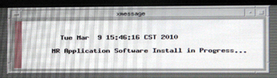

Illustration 16: Progress Window

Illustration 15: MR Applications Software Installation in Progress

The system begins partitioning the hard drives. A progress window displays.
Illustration 16: Progress Window
TheHDD Preparation Complete message appears, click [OK]. Guided Install will install and launch.
Illustration 17: HDD Preparation Complete Pop-Up